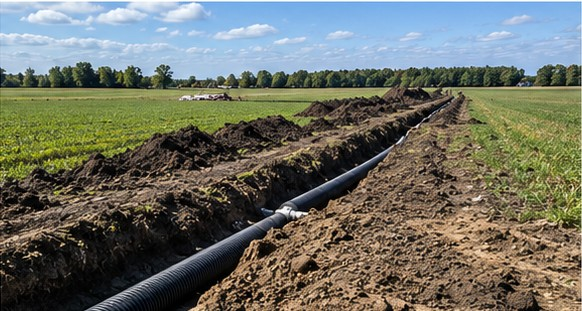

Excavation / Oakwaters Journal
Barn and Grain Bin Foundation Excavation
Agricultural structures demand stable foundations and coordinated utility routes.
Excavation guide · Southern Ontario

Agricultural structures demand stable foundations and coordinated utility routes. For Ontario property owners, the best starting point is understanding the site, the scope and the sequence of work before an excavator arrives. The visible excavation is only one part of a project that also involves access, utilities, drainage, safe working conditions and restoration.
Start with the site
Establish finished floor elevations, access for heavy vehicles and drainage away from the building.
Ask for the proposed limits of work, the assumptions behind the estimate and the expected condition of the site when the excavation crew leaves. A site walk, drawings and photographs can help identify conflicts before machinery is mobilized.
Plan the excavation sequence
Confirm bearing requirements, excavation limits and granular preparation with the project designer.
Ask for the proposed limits of work, the assumptions behind the estimate and the expected condition of the site when the excavation crew leaves. A site walk, drawings and photographs can help identify conflicts before machinery is mobilized.
Protect the finished property
Sequence buried services and equipment pads before final compaction and concrete work.
Ask for the proposed limits of work, the assumptions behind the estimate and the expected condition of the site when the excavation crew leaves. A site walk, drawings and photographs can help identify conflicts before machinery is mobilized.
Questions to settle before excavation
- Where will equipment enter, and where will excavated material go?
- Which underground services must be located or protected?
- How will rainwater, groundwater and sediment be managed during the work?
- What permits, inspections or specialist designs apply to this specific site?
- Who is responsible for backfill, compaction, grading and final restoration?
A practical next step
Before requesting a final quotation, assemble a simple description of the property, photographs of access points, any available survey or site drawings and the outcome you want. For a project in Guelph or Southern Ontario, discuss the scope with Oakwaters Construction and confirm which services and specialist trades are appropriate for the site.
Explore Oakwaters excavation services →Planning excavation work?
Discuss your property, drainage and site preparation needs with Oakwaters Construction.
Discuss Your Project →